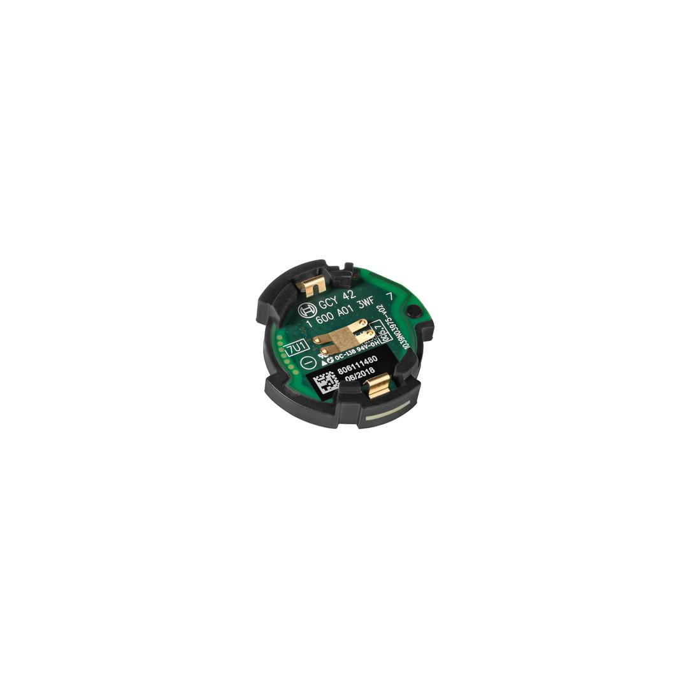

1600A01L2W

GCY 42 connect tool with smart device via bluetooth protocol, realise digital data transferring, parameter setting and work mode control, etc.
| Bluetooth type |
Bluetooth 4.0 (Low Energy) |
| Tool dimensions (width x length x height) |
30 x 7 mm |
| Weight |
0.01 kg |
| Backup battery type |
Button Cell CR2032 |
Bluetooth Connectivity Module